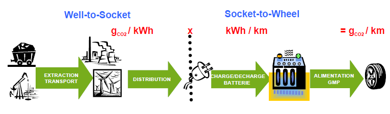
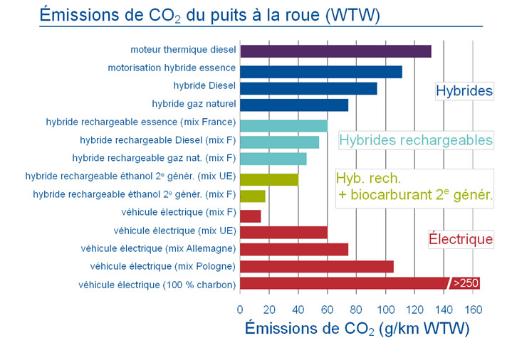

BILAN CARBONE DU VEHICULE ELECTRIQUE

Socket (mot anglais qui signifie prise)
Le véhicule électrique est présenté comme un véhicule « propre » en ce qu’il n’émet ni CO2 ni particules ni NOx (oxydes d'azote) « de la prise à la roue » (« from socket to wheel » ). Les NOx sont des gaz irritants qui pénètrent dans les ramifications les plus fines des voies respiratoires.
Cette « propreté » n’est pas forcément la même pour l’énergie électrique qui remplira ses batteries. C’est pourquoi on calcule, également, les émissions de CO2 du véhicule électrique « du puits à la roue » (« from well to wheel » – WTW) en prenant en compte aussi les émissions de CO2 des centrales de production d’énergie électrique.
La mesure d’émissions de CO2 peut alors être comparée pour différents types de motorisation ou de carburants (électrique, hybride, diesel, essence, GNL, bioéthanol, etc.).

Le mix énergétique définit la répartition des différentes sources d’énergie primaire (nucléaire, charbon, pétrole, éolien, etc.) utilisées pour produire une énergie bien définie comme l’électricité.
La voiture hybride possède une double motorisation combinant un moteur thermique et un ou plusieurs moteurs électriques . La batterie est de faible capacité, en moyenne 1 kWh. Cette dernière permet une autonomie électrique de 2-3 km et une vitesse pouvant aller jusqu’à 50km/h. Ces modèles sont idéaux pour la ville. (nombreux petits arrêts et redémarrage). La batterie se recharge grâce à un dispositif de récupération d’énergie cinétique au freinage et grâce au moteur thermique.
La voiture hybride rechargeable: possède également une double motorisation mais intègre une batterie de plus grande capacité (de 8 à 11 kWh). En tout électrique, la voiture a une autonomie moyenne comprise entre 20 et 45 km et peut atteindre les 130km/h. Lorsque le conducteur dépasse cette vitesse ou que la batterie électrique est déchargée, le moteur thermique prend le relai. La recharge se fait comme sur une voiture électrique, à l’aide de source d’énergie extérieure.
Le bioéthanol est un carburant automobile. Comme tous les alcools d’origine agricole, il est obtenu par fermentation et distillation du sucre contenu dans la betterave sucrière ou de l’amidon contenu dans les céréales.
Les émissions de CO2 dépendent très fortement du mix énergétique permettant de produire l'électricité.
La France qui produit de l'énergie électrique peu carbonée a un bilan très favorable : 12g de CO2 / km (grace aux centrales nucléaires,hydrauliques, éoliennes et photovoltaiques)
Bonne nouvelle, 50 % des nouveaux moyens de production d'énergie électrique des pays industrialisés sont à base d'énergies renouvelables.
Created with the Personal Edition of HelpNDoc: Easily create HTML Help documents